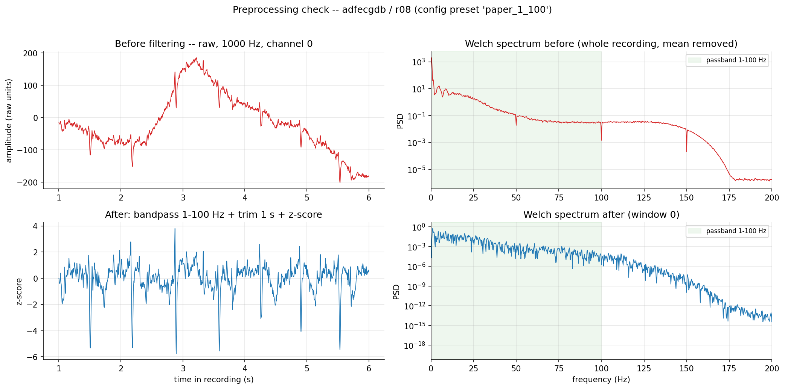
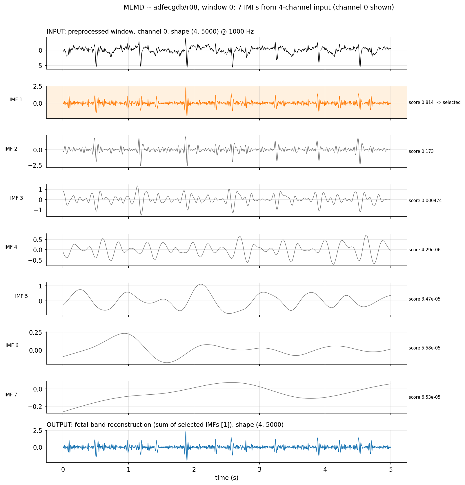
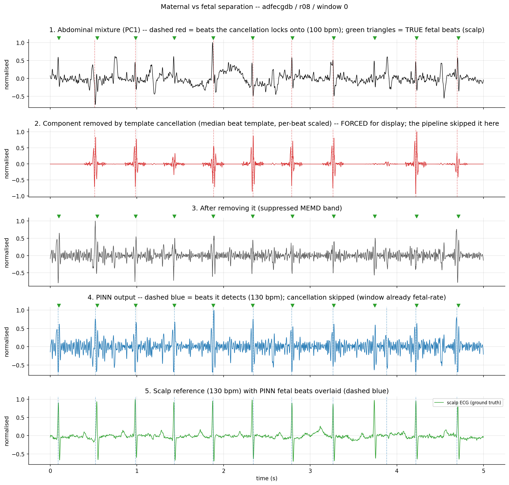
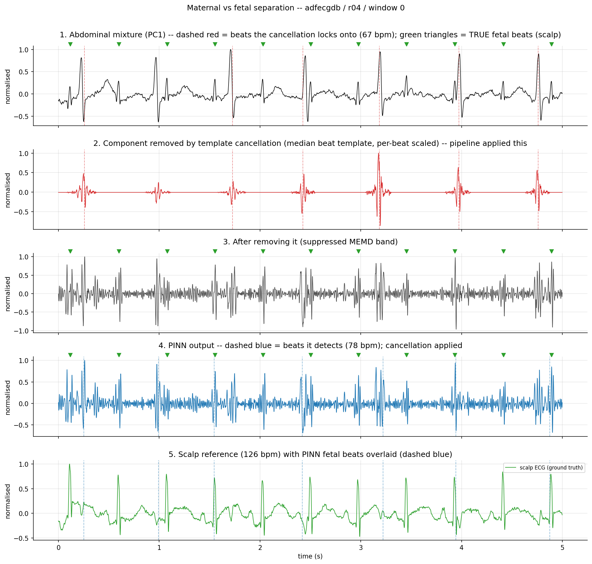
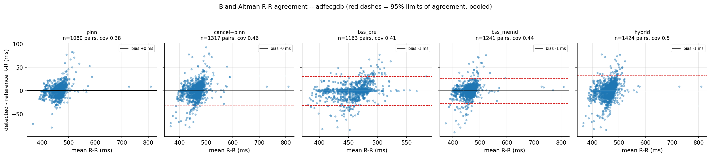
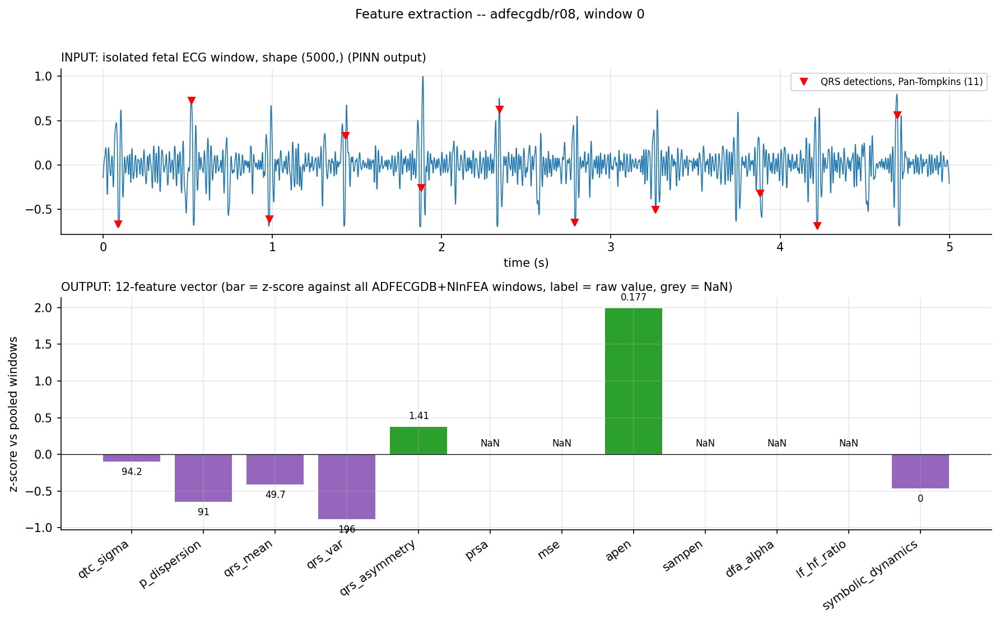
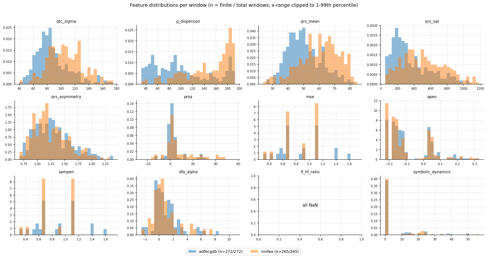
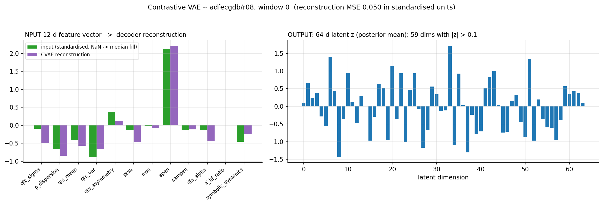
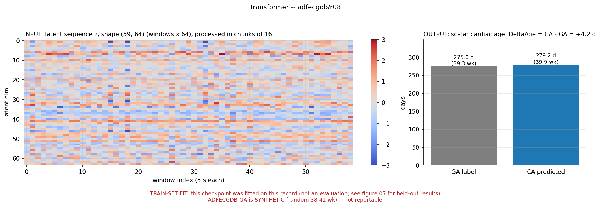
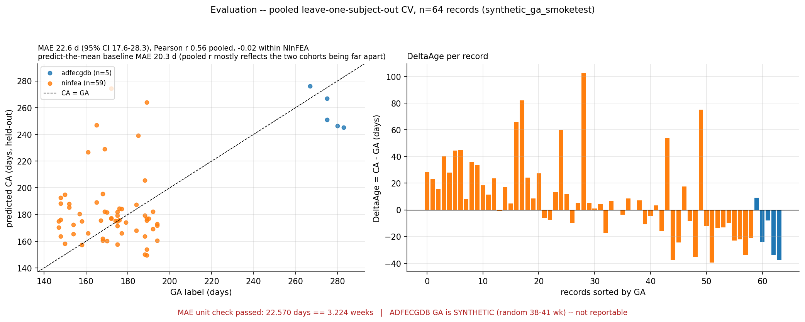

Fetal Cardiac Ageing Clock: pipeline overview
Input, output and metrics for each stage.
1Preprocessing
Band-pass 1–100 Hz (zero-phase Butterworth), 50 Hz notch on NInFEA and CinC only, NInFEA: top-4 channels by kurtosis then resample 2048→1000 Hz, per-channel z-score, cut into 5 s windows.
Metrics
| Cohort | Records | Windows | Notch | Note |
|---|---|---|---|---|
| ADFECGDB | 5 | 295 (59 each) | off | 1 s trimmed at each end |
| NInFEA | 60 | 315 | on | kurtosis top-4 of 24 |
| CinC 2013 | 25 | 275 (11 each) | on | 13 of 25 records have strong 50 Hz mains |
No accuracy metric at this stage: it is checked visually (time-domain + Welch spectrum).

2MEMD (multivariate EMD)
Splits the 4 channels jointly into IMF layers (64 directions). Each IMF is scored by in-band power (20–70 Hz); high scorers are summed. Removes drift, motion and muscle noise only — the mother is still in the output.
Metrics
| Item | Value |
|---|---|
| IMFs per window (ADFECGDB) | 6–8 |
| IMFs kept per window (mean) | about 1.0 |
| Selection rule | score ≥ mean + 1 SD (no fixed top-k) |
| QRS F1 of MEMD output, ADFECGDB | 0.501 |

3PINN extraction
The frozen PINN takes the 4-channel window (potential V, ∇²V = 0, loss 0.7·L_data + 0.3·L_physics) and V is read out as one signal by PCA. Windows that fail a quality check (110–160 bpm, ≥5 beats) are replaced by a blind-source-separation output.
Metrics
QRS F1 (±50 ms) — ADFECGDB
QRS F1 (±50 ms) — CinC 2013 (zero-shot)
| Metric | Value |
|---|---|
| NInFEA windows within 10 bpm of the Doppler rate | 54% |
| NInFEA median rate error | 9 bpm |
| R-R Bland–Altman, ADFECGDB (PINN output) | bias 0.3 ms, limits of agreement −26 to +27 ms (1080 pairs) |



4Feature extraction (12 biomarkers)
Not a trained model. Pan-Tompkins finds R peaks, RR intervals are cleaned, Q/S/P/T are located around each R peak, then 5 shape features and 7 rhythm features are computed. A feature is NaN when the window has too few beats.
Metrics
Share of windows with a real (non-NaN) value — pooled ADFECGDB + NInFEA, 537 windows
Morphological features are always defined; the slow rhythm features (MSE, SampEn, DFA, PRSA, LF/HF) need hundreds of beats and a 5 s window holds only 8–12 RR intervals. LF/HF was never defined on any window.


5CVAE (contrastive VAE)
Standardise the 12 features (NaN filled with the median), encode 12 → 128 → 64 → latent z (64), decode back to 12. Trained with reconstruction + KL + InfoNCE (τ = 0.07; positives = same subject or GA within ±7 d). GA is never an input. It expands the data; it is not compression.
Metrics
| Check (held-out, 537 windows, 44 subjects) | Unscaled inputs | Standardised inputs |
|---|---|---|
| Reconstruction R², median over features | −0.01 | 0.86 |
| Features reconstructed better than the training mean | 3 of 11 | 11 of 11 |

6Transformer (Cardiac Age)
Takes one recording's sequence of latents (up to 64 windows). Linear 64 → 256, a CLS token and learned positions are added, 3 encoder layers (4 heads, d_k 64, feed-forward 1024), the CLS output goes through 256 → 128 → 1. MAE loss, AdamW.
Metrics
No separate held-out metric here: the saved model was fitted on all records, so its predictions on them are a train-set fit, not an evaluation (r08: 279.2 d vs 275.0 d label). The held-out result is stage 7.

7Evaluation: pooled leave-one-subject-out CV
Each mother's recordings are held out together; CVAE and transformer are refitted inside every fold. MAE in days with a 95% bootstrap CI (1000 resamples) after the mandatory unit check. ΔAge = CA − GA.
Metrics
MAE in days, 64 records (lower is better)
| Subset | n | MAE (95% CI), days | RMSE | Pearson r |
|---|---|---|---|---|
| Overall | 64 | 22.6 (17.6–28.3) | 30.6 | 0.56 |
| NInFEA only | 59 | 22.6 (17.6–28.3) | 31.0 | −0.02 |
| ADFECGDB only | 5 | 22.5 (11.5–33.4) | 25.6 | −0.90 (labels are synthetic) |
Mean ΔAge overall: +7.8 days. Within NInFEA the model is worse than predicting the NInFEA mean (12.5 d); the overall r of 0.56 mostly reflects the two cohorts (21–27 wk vs 38–41 wk) being far apart. None of the 12 features correlates with GA within NInFEA after multiple-test correction.
ADFECGDB gestational ages are placeholders pending the real labels.
